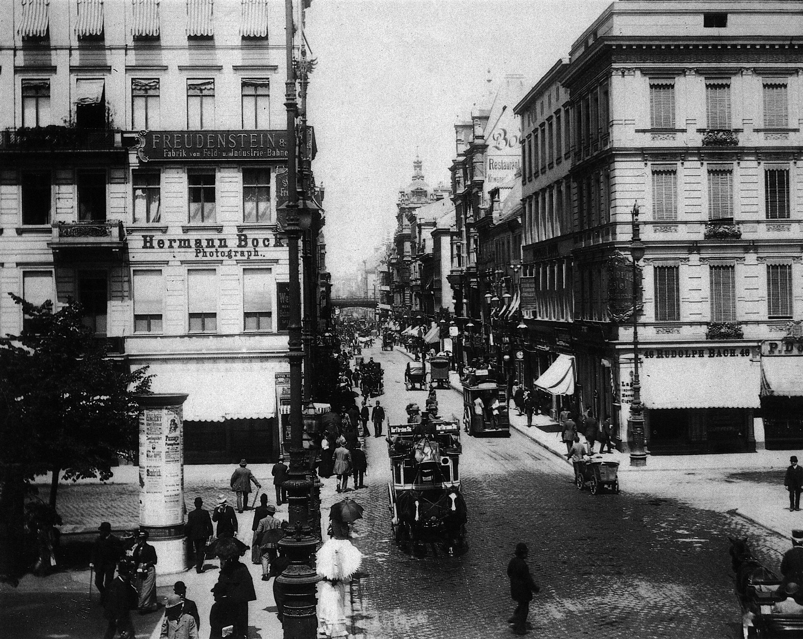

Simmel, Die Großstädte und das Geistesleben (The Metropolis and Mental Life), opening sections (1903)
💡 CONTEXT
Simmel gave this essay as a lecture and printed it in 1903, in a Berlin that had grown more than tenfold in a century. It opens on the problem it will close on: the individual’s effort to keep an independent, particular existence against the weight of society, inherited tradition, and the technique of modern life. That struggle, Simmel says, is the modern form of the old struggle with nature for bodily survival. The opening half, studied here, explains how the city person defends against the city. The closing half, Text Study 13A in Week 13, asks what freedom and individuality that defence makes possible.
📊 THE ARGUMENT AT A GLANCE
HOW THE CITY BUILDS A MIND
1 · CONDITIONRapid, sharp, unexpected changes of impression
→
2 · DEFENCEReaction moves from feeling to intellect
→
3 · MONEYReduces quality to quantity; treats people as functions
4 · THE CLOCKPunctuality and calculation hold a dense city together
↓
5 · BLASÉ ATTITUDEDifferences between things stop registering
+
6 · RESERVEGuarded distance toward the many people met each day
→
TEXT STUDY 13AThe freedom and individuality this distance allows
Steps 1 to 4 are causes. Steps 5 and 6 are the personality they produce.
📖 THE ARGUMENT, SECTION BY SECTION
1
The city intensifies nervous stimulation
CLAIMThe psychological basis of the metropolitan personality is an intensified nervous life, caused by a fast and unbroken succession of outer and inner impressions.
REASONThe mind registers difference: it is roused by the contrast between a present impression and the one before. Steady, familiar, slowly changing impressions cost little effort. Crowded images, sharp contrasts within a single glance, and sudden jolts cost much more. The city produces the second kind constantly.
EXAMPLEEvery street crossing, and the sheer pace and variety of economic, working, and social life. Small-town and rural life moves to a slower, more habitual rhythm that demands far less conscious attention.

Friedrichstraße, Berlin, about 1900: traffic, posters, signs, and strangers competing for attention at a single crossing. This is the stream of impressions Simmel argues the city mind must learn to manage. F. Albert, c. 1900. Public domain, via Wikimedia Commons.
2
The intellect becomes a protective organ
CLAIMThe city dweller meets the flood of impressions with the head rather than the heart.
REASONFeeling and emotional ties lie in the deeper, less conscious layers of the mind and grow best in settled custom. Understanding works in the clear, conscious surface of the mind and adapts most easily. It can absorb change without the inner upheaval feeling would suffer. So the metropolitan type grows a protective organ: reactions are shifted to the least sensitive part of the mind, the part furthest from the core of the personality.
CONSEQUENCEThis is a description of adaptation, not a complaint. Without the shift, the city would overwhelm the person. The cost lies in the distance it puts between experience and the self.
3
Money and intellect share one temper
CLAIMMoney has long had its home in the city, and money and intellect go together. Both treat people and things in a purely matter-of-fact way, which often joins formal fairness to complete hardness.
REASONMoney asks one question, how much, and so reduces every quality to a quantity. Emotional relations rest on what is individual in a person; intellectual relations treat people like numbers, of interest only for what they objectively supply. In a small circle, knowing each person’s character gives every dealing an emotional tone. In the city the same dealings are settled on terms of work done and payment made.
EXAMPLEProduction for the market. Earlier, a craftsman made goods for a customer who ordered them, and the two knew each other. The city is supplied for buyers the producer never sees, so each side can pursue its interest with no personal tie to bend it. Simmel cites an English constitutional historian for the remark that London has served England less as its heart than as its intellect and its purse. Which of the two, money or intellect, came first, he says, no one can tell.
4
Punctuality and calculability
CLAIMThe modern mind has become a calculating mind, and small external habits show it.
REASONMoney fills daily life with weighing, counting, and converting qualities into sums. This matches the ideal of natural science, which aims to turn the world into an arithmetic problem. The dense city adds a second cause. Its residents’ interests are so many and so entangled that the whole works like one vast organism, and it could run only on exact timing. Long distances also make every wait and every missed appointment costly.
EXAMPLEThe pocket watch, now carried by nearly everyone. Simmel’s thought experiment: suppose every clock in Berlin went wrong by a different amount, even by as little as an hour. Commerce across the city would stall for a long time. City life requires a fixed, impersonal schedule that overrides individual moods.
5
The blasé attitude
CLAIMThe most distinctive mental result of the city is the blasé attitude: a dulled capacity to respond to new impressions with the energy they would once have drawn.
REASONNerves driven hard for long enough stop answering. The person still perceives differences between things but no longer feels them as mattering, so everything appears in one even, grey tone. The money economy reinforces this: when everything has a price, things differ only in how much they cost, and money becomes the great leveller of their distinct worth.
EXAMPLEA commuter who has crossed the same crowded station for years and could not describe one face in it.
6
Reserve
CLAIMToward other people the city dweller adopts reserve: a guarded, often slightly cool distance.
REASONA villager can respond inwardly to almost everyone he meets. A city dweller who tried to do so with the thousands he passes would be torn apart inside. Reserve is the social form of the same protection the intellect gives. It also brings a freedom no small circle allows, since nobody is watching, and this is the thread the closing sections of the essay take up.
EXAMPLENeighbours in one building who have nodded at each other for years and do not know each other’s names.
⚖️ THE DISTINCTIONS THAT CARRY THE ARGUMENT
FEELING / INTELLECTThe deep, slow, custom-bound layer of the mind, versus the conscious, adaptable surface.
QUALITY / QUANTITYWhat makes a person or thing unique, versus what can be counted and priced.
ORDERED / MARKETProduction for a known customer, versus production for unseen buyers.
PERCEIVE / FEELThe blasé person still notices differences; they no longer matter to him.
CAUSE / EFFECTSimmel declines to say whether money produced the calculating mind or the reverse. The city nourishes both.
❓ THE STRONGEST OBJECTION
The argument moves from the nervous system to the personality to a whole civilization, and the middle steps are asserted more than shown. No measurement establishes that city stimulation exhausts the nerves, or that rural people are in fact more emotional in their dealings. A critic can say Simmel reads a cultural mood off a few vivid images, the street crossing and the pocket watch, and then treats it as a law.
A second objection concerns the village. The warm small circle Simmel sets against the city may be idealized. Small communities have their own coldness: surveillance, feuds, and the exclusion of anyone who differs. If the village was never as personal as the contrast needs, the city’s reserve may be less a loss than a trade.
🎯 FOUR QUESTIONS
What is the intensification of nervous stimulation that Simmel describes, and why does he think it produces the blasé attitude?
Simmel argues that the money economy and the intellect have a natural affinity. What does he mean? Why would a money-based society tend to produce intellectually oriented rather than emotionally oriented personalities?
The modern city produces for buyers the producer never sees. What changes about an economic relationship when the two parties do not know each other, and what does Simmel think is lost?
Why does Simmel treat something as mundane as punctuality as serious evidence for his larger claim? What does the Berlin clock thought experiment show?
✏️ AFTER THE QUESTIONS
▶ Question 4: the clocks of Berlin
The thought experiment works because its answer is obvious once posed. It shows that a metropolis is not a large village but a system whose parts mesh so tightly that a small, shared, invisible convention holds it up. Simmel then reads the pocket watch as evidence about the mind: a society that demands that much exactness produces people who think in terms of exactness and calculation. That is his method in miniature, reading a civilization off its most trivial surface. Whether the inference is legitimate is the fair question to put to him.
▶ Is the blasé attitude a bad thing?
Not straightforwardly. Simmel calls the intellect a protective organ, the language of biology rather than of complaint. An organ that grows in response to a real threat is not a defect. The cost lies in where the protection sits: furthest from the core of the personality, so that something is kept safe by being kept at a distance from experience. Simmel leaves the reader to weigh that, and he declines a verdict again at the end of the essay in Text Study 13A.
➡️ NEXT
1
Sociological Journal 4
2
Week 5
Optima Academy Online · SOCIOLOGY · Quarter 1 · Text Study
Simmel, Die Großstädte und das Geistesleben (1903), opening sections